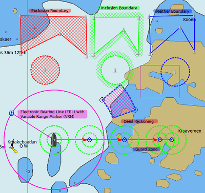
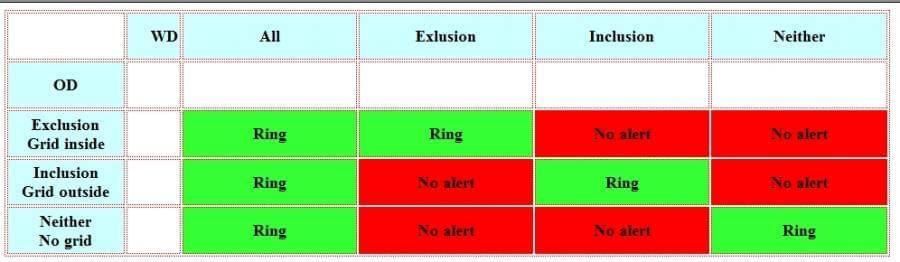
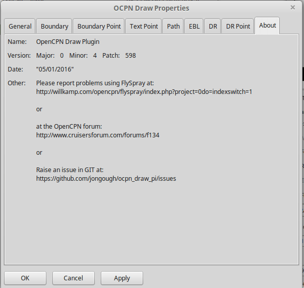
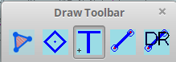
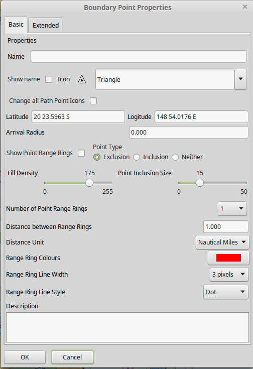

Ocpn_Draw
BETA available
Summary
The Ocpn_Draw Plugin (OD) is designed to allow users to place objects/items on the OpenCPN interface and have these georeferenced. This allows the objects/items to move with the chart and have a defined Latitude and Longitude. There are two basic types of object/item that can be used:
Points are very similar to Waypoints and mark locations on the chart. Paths join two or more points together and draw a line between them. Currently these Points exist:
- Boundary Point
- Text Point
- Electronic Bearing Line (EBL) Point
- Dead Reckoning (DR) Point
- Guard Zone (GZ) Point
These Points are used to construct special types of Paths:
- Boundary
- Electronic Bearing Line (EBL)
- Dead Reckoning (DR)
- Guard Zone (GZ)
The example screen shot below shows an example of each type of Point and Path.

WatchDog Alarms
Ocpn_Draw_pi (OD) provides a graphics companion to Watchdog_pi (WD) Alarms. OD is used as a graphics tool to create Boundary Graphics and Boundary Point Graphics. WD will then create “Boundary Alarms” using the Boundary Graphics created by OD. The alarms that WD can create are (GPS proximity, GPS course & time, Anchor, AIS) depending on the alarm type WD may require a particular Boundary GUID or the alarm may apply to all boundaries that are displayed. The WD alarm types are separate and distinct from the OD graphics types (inclusive, exclusive, neither). OD knows nothing about the WD plugin, it just responds with information about specific Lat/Lon combinations. WD can use the graphic type that OD has to help filter which boundaries to look for. So if you have a large number of boundaries of mixed 'types' it would probably help if you selected the type of boundary to look for rather than use the default 'Any'.
ODraw and WatchDog interactions
See Plugin Messaging between ODraw , Watchdog and Weather_routing. A simple way to visualise the interactions between ODraw Boundaries and WatchDog boundaries alarms is laid out in this chart.

The chart shows which OD Boundary objects will cause a WD alarm to ring. If the WD alarm is set to Exclusion, the alarm will ring, go off, if an Exclusion boundary is found within the alarm area, i.e. time or distance. However, no other type of boundary will cause the alarm to go off. So when you setup the alarms you need to check the above matrix to ensure you will get the alarm when you want it.
Installation
This plugin requires the most current version of Opencpn 4.1.xxx
Download the plugiin from the Plugin Downloads secton of opencpn.org
Settings

Settings > Plugin > Ocpn_Draw > Preferences
Under Preferences the Tabs are General, Boundary, Boundary Point, Text Point, Path, EBL, DR, DR Point and About where various settings are selected. Generally the defaults should give a reasonable starting point. However, all the defaults that are used can be changed from here.
General
Confirm Delete
This setting determines whether a dialog box will be shown asking for conformation about deleting any objects. With it checked you will be asked to confirm all deletes, with it unchecked you will be able to delete any object without being asked for confirmation. If you do delete an object by mistake and you have 'Nav Object Backups' set to more than 0, you will be able to use one of those backups to restore your objects.
Show Magnetic Bearings
If this is checked and there is a magnetic variation available then this will be applied to all angles that are used within the plugin. If it is checked and there is no magnetic variation available it will assume a '0' variation.
Nav Object Backups
This setting determines how many backups to keep of the navigation objects file. The location of the files can be found in the opencpn.log file. Each time OpenCPN stops a new copy of the navigation obj file will be created. The latest file is called 'ODnavobj.xml'.
Edge Panning Sensitivity
This is the percentage of the screen size distance from the edge that will cause the screen to pan when using the drawing tools. The bigger this number the further from the edge of the screen your pointer will be when the screen starts panning.
Initial Edge Panning Sensitivity
This is the same as above, but is used after a drawing tool is picked but before the first object is created. This is supplied so that the screen does not start panning if you move your pointer off of the toll bar near the edge of the screen.
Display Toolbar
The plugin allows you to use two graphical methods of selecting the tool you wish to draw with:
- The main Toolbar and the right mouse click
- The Draw Toolbar
This setting determines if the tool bar is display and has three settings
- Never - the toolbar is not displayed
- Whilst Drawing - the toolbar is displayed whilst a drawing tool is active
- Always - the toolbar will display all the time irrerspective of whether you are using the plugin.
Boundary
Active Line Color
This is the color of an active Boundary Line
Selection is by a platform specific color picker. This will allow the color to be any RGB (Red, Green, Blue) color that is supported by the platform.
Active Fill Color
This is the default color to use for any active Boundary fill hash. When selected a standard, platform dependent, color picker will be presented. This will allow the color to be any RGB (Red, Green, Blue) color that is supported by the platform.
Inactive Line Color
This is the color of an inactive Boundary Line.
Selection is by a platform specific color picker. This will allow the color to be any RGB (Red, Green, Blue) color that is supported by the platform.
Inactive Fill Color
This is the default color to use for any inactive Boundary fill hash. When selected a standard, platform dependent, color picker will be presented. This will allow the color to be any RGB (Red, Green, Blue) color that is supported by the platform.
Line Width
This is the width of the Boundary Line in pixels. It can be a value between 1 and 10 pixels.
Line Style
This defines how the Boundary Line is drawn. It can be one of the following:
- Solid
- Dot
- Long Dash
- Short Dash
- Dot Dash
Some of these may not display well on your screen depending on the resolution you are using. It is known that when using high resolution screens, i.e. 3800×1900 the difference between the line types may be difficult to see.
Fill Density
This allows the setting of how transparent the fill hash is. A value of 0 means that it is fully transparent and a value of 255 is that it is fully opaque. The term density is used as it seemed clearer, i.e. low density - you can see through it, high density - you cannot see through it.
Boundary Inclusion Size
This defines, in pixels, how wide the hash is around the outside Boundary Line when the Boundary is of type 'Inclusion'.
Boundary Type
This radio button selection sets the default type for all Boundary. Points.
- Exclusion - fill the inside of the Boundary with a hash.
- Inclusion - surround the Boundary with a nominated size hash
- Neither - just draw the Boundary Line with no hash
Boundary Point
Arrival Radius
This is not really relevant to a Boundary Point at the moment, but may become useful if other items/capabilities are added
Show Name
This is the default setting for showing the Boundary Point name. Currently Boundary Points are created with the name empty/blank so nothing displays.
Icon
This is the default icon to use for all Boundary Points. There is a set of OpenCPN icons that can be used as well as user defined icons. The method of adding user defined icons is documented in the main OpenCPN manual
Show Range Rings
Boundary Points can have range rings associated with them. To show the rings by default this setting needs to be checked.
Boundary Point Type
This radio button selection sets the default type for all Boundary Points.
- Exclusion - fill the inside range rings with a hash.
- Inclusion - surround the largest range ring with a nominated size hash
- Neither - just draw the range rings but there is no hash
Fill Density
This allows the setting of how transparent the fill hash is. A value of 0 means that it is fully transparent and a value of 255 is that it is fully opaque. The term density is used as it seemed clearer, i.e. low density - you can see through it, high density - you cannot see through it.
Boundary Point Inclusion Size
This defines, in pixels, how wide the hash is around the outside Boundary Point Range Ring when the Boundary Point is of type 'Inclusion'.
Number of Range Rings
This defines the number of range rings to show if they are selected to be shown. If Zero is selected, then there will be no range ring shown.
Distance Between Range Rings
This is the gap between sucessive range rings. The measurement this is using is defined in the Distance Unit' setting
Distance Unit
The unit of measurement to use for the range rings gap. It can be:
- Nautical Miles
- Kilometers
Range Ring colors
This is the default color to use for any Boundary Point Range Ring. When selected a standard, platform dependant, color picker will be presented. This will allow the color to be any RGB (Red, Green, Blue) color that is supported by the platform.
Range Ring Line Width
This is the width of the range rings when drawn in pixels. It can be a value between 1 and 10 pixels.
Range Ring Line Style
This defines how the Range Rings are drawn. It can be one of the following:
- Solid
- Dot
- Long Dash
- Short Dash
- Dot Dash
Some of these may not display well on your screen depending on the resolution you are using. It is known that when using high resolution screens, i.e. 3800×1900 the difference between the line types may be difficult to see.
Text Point
Text Point Icon
This is the default icon to use for all Text Points. There is a set of OpenCPN icons that can be used as well as user defined icons. The method of adding user defined icons is documented in the main OpenCPN manual.
Text Position
This selects where the text is positioned relative to the location of the Text Point. If you show an Icon it will be easier to see and interact with the text on the screen. If you do not use an Icon it may be easier to use the Path Manager to get to the Text Point.
There are 7 different locations:
- Top
- Top center
- Bottom
- Bottom center
- center
- Right
- Left
Text color
This is the color that the default Display Text will have. Selection is by a platform specific color picker. This will allow the color to be any RGB (Red, Green, Blue) color that is supported by the platform.
Background color
When a Text Point displays text it will have a colored background to help it stand out from the underlying chart. This is the default color of the background box. This will allow the color to be any RGB (Red, Green, Blue) color that is supported by the platform.
Background Density
This allows the setting of how transparent the background color. A value of 0 means that it is fully transparent and a value of 255 is that it is fully opaque. The term density is used as it seemed clearer, i.e. low density–you can see through it, high density–you cannot see through it. The default density is 100.
Text Font
This is the default font to be used for the 'Display Text'. The 'Fonts' button will allow picking of any font that is installed on the system. You can pick the Family, Style and Size of the font. This is presented by a platform specific font picker. The current font that will be used is shown by the work 'Example' which will be drawn using the font selected.
Show Display Text
This is the default for when the Display Text of a Text Point is shown.
- Always - Display text is always shown
- On Rollover Only - The text will be displayed when the mouse pointer rolls over the Text Point. This is to try and help declutter the screen if there are many objects being concurrently displayed.
- Never - The display text is not displayed
Path
Active Line color
This is the color of an active generic Path if there is no specific type. Currently this is not used as there are no unspecified Path types in use. Selection is by a platform specific color picker. This will allow the color to be any RGB (Red, Green, Blue) color that is supported by the platform.
Inactive Line color
This is the color of an inactive generic Path if there is no specific type. Currently this is not used as there are no unspecified Path types in use. Selection is by a platform specific color picker. This will allow the color to be any RGB (Red, Green, Blue) color that is supported by the platform.
Line Width
This is the width of the Path Line in pixels. It can be a value between 1 and 10 pixels.
Line Style
This defines how the Path Line is drawn. It can be one of the following:
- Solid
- Dot
- Long Dash
- Short Dash
- Dot Dash
Some of these may not display well on your screen depending on the resolution you are using. It is known that when using high resolution screens, i.e. 3800×1900 the difference between the line types may be difficult to see.
Electronic Bearing Line (EBL)
Start Point Icon
This is the default icon to use for the start point of an EBL. There is a set of OpenCPN icons that can be used as well as user defined icons. The method of adding user defined icons is documented in the main OpenCPN manual.
End Point Icon
This is the default icon to use for the end point of an EBL. There is a set of OpenCPN icons that can be used as well as user defined icons. The method of adding user defined icons is documented in the main OpenCPN manual.
Active EBL Line color
This is the color of an active EBL. Selection is by a platform specific color picker. This will allow the color to be any RGB (Red, Green, Blue) color that is supported by the platform.
Inactive EBL Line color
This is the color of an inactive EBL. Selection is by a platform specific color picker. This will allow the color to be any RGB (Red, Green, Blue) color that is supported by the platform.
Line Width
This is the width of the EBL in pixels. It can be a value between 1 and 10 pixels.
Line Style
This defines how the EBL is drawn. It can be one of the following:
- Solid
- Dot
- Long Dash
- Short Dash
- Dot Dash
EBL Fixed End Position
This the default for all EBLs. This fixes the End Point of an EBL such that when the boat moves the end point does not. If this is left uncheck the end point of the EBL will move with the boat so the EBL always has the same length and bearing.
Show EBL Direction Arrow
This is the default for all EBLs. If checked a direction arrow will be displayed on the EBL at or near the end point. This helps show the direction of the EBL.
EBL Persistence
The EBLs that are created can be:
- Persistent - will persist over a restart of OpenCPN
- Persistent over Crash - will not persist over a normal restart of OpenCPN, but will be persistent over a crash of OpenCPN
- Never - the EBL will only be temporary and will not be displayed again when OpenCPN is restarted.
Show VRM
This draws a Variable Range Marker (Ring) centerd on the start point and sized to go through the end point.
Dead Reckoning (DR)
DR Point Icon
This is the default icon to use for the all points of a Dead Reckoning line. There is a set of OpenCPN icons that can be used as well as user defined icons. The method of adding user defined icons is documented in the main OpenCPN manual.
Active DR Line color
This is the color of an active DR Line Selection is by a platform specific color picker. This will allow the color to be any RGB (Red, Green, Blue) color that is supported by the platform.
Inactive DR Line color
This is the color of an inactive DR Line. Selection is by a platform specific color picker. This will allow the color to be any RGB (Red, Green, Blue) color that is supported by the platform.
Line Width
This is the width of the DR line in pixels. It can be a value between 1 and 10 pixels.
Line Style
This defines how the DR line is drawn. It can be one of the following:
- Solid
- Dot
- Long Dash
- Short Dash
- Dot Dash
Speed over Ground
This is the default speed over the ground to use when calculating the DR line.
Course over Ground
This is the default course over ground to use. The type, True or Magnetic, is determined by the setting in the General tab.
DR Path Length
This is the default length of the DR line.
DR Point Interval
This is the default interval to place points along the DR path.
Length Type
This is the default length type to be used, either Time or Distance.
Interval Type
This is the default interval between placing points, either Time or Distance.
Distance Units
This is the default distance units to use, either Kilometers or Nautical Miles
Time Units
This is the default time units to use, one of Minutes, Hours or Days
DR Persistence
The DR lines that are created can be:
- Persistent - will persist over a restart of OpenCPN
- Persistent over Crash - will not persist over a normal restart of OpenCPN, but will persist over a crash of OpenCPN
- Never - the DR line will only be temporary and will not be displayed again when OpenCPN is restarted.
Dead Reckoning Point (DR Point)
Show Range Rings
Boundary Points can have range rings associated with them. To show the rings by default this setting needs to be checked.
Number of Range Rings
This defines the number of range rings to show if they are selected to be shown. If Zero is selected, then there will be no range ring shown.
Distance Between Range Rings
This is the gap between successive range rings. The measurement this is using is defined in the 'Distance Unit' setting
Distance Unit
The unit of measurement to use for the range rings gap. It can be:
- Nautical Miles
- Kilometers
Range Ring colors
This is the default color to use for any DR Point Range Ring. When selected a standard, platform dependant, color picker will be presented. This will allow the color to be any RGB (Red, Green, Blue) color that is supported by the platform.
Range Ring Line Width
This is the width of the range rings when drawn in pixels. It can be a value between 1 and 10 pixels.
Range Ring Line Style
This defines how the Range Rings are drawn. It can be one of the following:
- Solid
- Dot
- Long Dash
- Short Dash
- Dot Dash
Some of these may not display well on your screen depending on the resolution you are using. It is known that when using high resolution screens, i.e. 3800×1900 the difference between the line types may be difficult to see.
About

This page provides useful information in the event you have problems with the Plug In. Please provide the version number and the patch number with any reported incident. You should also provide the version number of OpenCPN as this will help identify where the issue may be.
Interface at the Icon Toolbar
Draw Create (right icon)
The plugin has an interesting interface with two icons as shown above for Draw Manager and Draw Create. The right icon Draw Create is dynamic and will show a different icon depending on which drawing object type has been selected. Click on the right icon and a floating Draw Toolbar appears containing Draw Tools, with the last one used selected by default (appears depressed). Select the Drawing Tool needed.

The above Draw Tools are for Boundary, then Boundary Points, Text points, EBL and DR in that order.
The Drawing Objects that are available are as follows:
- Boundary
- Boundary points
- Text points
- Electronic Bearing Lines (EBL) & Variable Range Marker (VRM)
- Dead Reckoning
Try drawing several of each type to learn how they work and what they create. You can select the next tool in sequence by right clicking the mouse prior to starting to draw. Once a left mouse click has been done the right click will terminate the 'create' drawing. You can also stop the 'create' mode by hitting 'Esc', left mouse clicking the selected tool in the main toolbar or by left mouse clicking on the close icon in the 'Draw Toolbar'. It sounds complicated, but you will find one of the methods should meet your normal usage requirements.
Each tool has a cursor icon:
- Boundary: Pencil
- Boundary Point: Red Cross
- Text Point: 'I' icon
- EBL: Red Cross and a line joining the cursor to the boat
- DR: Red Cross
The DR tool does not draw based on the current cursor position, it brings up a dialog box that allows you to enter the DR information.
When you left mouse click 'OK' the DR line will be drawn based on the information you have entered. The information that is first displayed is the default information entered into the properties panel or the current information available to OpenCPN, i.e. SOG and COG.
Draw Manager (left icon)
The left Icon is for the Draw Manager which gives the user control over each of the Drawing objects that have been created from the Draw Toolbar. From the Drawing Manager menu Path & Point Manager Tabs for Paths, Ocpn Points, Layers become available, and selected Drawing Objects can be Shown, Hidden, Deactivated, Centered, Deleted, Exported, Delete All, and Export All. Additionally a drawing object's Properties can be accessed and changed.
First select one or more Drawing Objects under a given Tab. Then select the desired Action on the right. For example: Select all Drawing Objects under Paths Tab, then select Delete. This will remove all of the Drawing Objects under Path Tab. Of course the quick alternative is to select Delete All. Properties, Deactivate and Center View are greyed out when more than one object is selected.
Drawing Manager > Layers
Drawing Objects imported into Layers are static and non editable. Use Layers in the same way as the Route and Waypoint manager does, i.e. Temporary Layers. It will bring in boundaries and points and show or hide them as required. You can load more than one layer file into the same layer, just select more than one file in the file manager popup and they will load into the same layer. To use Layers and move Drawing Objects into a temporary user created Layer, select them, Export Selected and then from the Layer Tab Import.
Edit Mode for Draw Objects
First, to get out of the creative draw mode, click on the Draw Button and hit escape. Then in the drawing hover over the object you wish to modify until a square yellow descriptor appears, then right click. The popup menu's first line will identify the type of drawing object you have selected. Then there will be a action pick list, dependent on the object, such as Properties, Move.., Insert.. Deactivate.. Delete. Some drawing objects are made of several parts, (Boundary, Boundary Points, EBL & VRM) so it makes a difference where you hover and the condition of the object.
1. To select a Boundary, hover over the edges. To select a boundary point hover over it.
2. To select an EBL hover over the ends or the shaft, depending on whether the EBL is centered on a boat or lat/long the right click actions will be different. The popup menu list selections should be self explanatory.
When you have right clicked and selected an action, for example to move a boundary, text point or boundary point, the point will be highlighted with a yellow dot. Complete the move by dragging and releasing. For editing any characteristics such as color, line thickness, font, etc, use 'Properties', but if you just want to move a point select 'Move'. To move a point you will need to right click and select move. Having selected move you will then need to put the cursor over the selected object, push and hold the left mouse button and drag the object to where you want it. When you let go of the left mouse button the cursor (what ever it was showing before) should revert to the standard pointer and the 'move' process is terminated. If you want to move the object again, you will have to right click again to get the popup and repeat the process.
Edit Mode for Draw Object Properties
There are multiple ways to access an object's Properties.
- In Path & Point Manager double click on a Drawing Object, Properties will appear.
- In the Drawing hover over the Drawing Object, right click and pick Properties.
- In the Drawing hover over the Drawing Object, double left click, Properties will appear.
It is also possible to drill down into an object if it is multi-part, i.e. get a Boundary properties dialog displayed then right click or double click any line showing a Boundary point and the properties for that point will be displayed.
Available Drawing tools
This section will describe in more detail the drawing tools that are available with this Plug In.
Boundary
This allows drawing of a closed path joining all points that of the path. The smallest Boundary has two points, but normal Boundaries will have three (triangle) or more points. There is no limit to the number of points, or the size of the Boundary. When drawing points that have already been placed will be connected togther with the path line. A rubber band line will be drawn that follows the cursor. The boundary fill may appear incomplete or strange at this point. However, when the final point is place and the create process is finished it will correct itself and display the boundary fill correctly.
If a point is placed in the wrong location carry on laying the other points. When you have finished the create process you can then edit the boundary and 'Move', 'Delete' or 'Add' more points to the boundary. If the whole boundary is in the wrong location it can be moved as a whole from the right mouse click menu.
The types of boundary you can draw, which can be easily changed after creation if it is wrong, are:
- Exclusion - The interior of the boundary will have a cross hatch pattern of the selected color. The type of boundary reported to other plugins, such as Watchdog, will be of type 'Exclusion'.
- Inclusion - A user defined width cross hatch pattern will be drawn around the outside of the boundary in the selected color. The type of boundary reported to other plugins, such as Watchdog, will be of type 'Inclusion'.
- Neither - The boundary will be drawn as a line with no interior or exterior fill. The type of boundary reported to other plugins, such as Watchdog, will be of type 'Neither'.
- Please Note that these Types (exclusion, inclusion, neither) are Graphical only, and WatchDog does not use them in setting its internal alarms. We recommend that these graphic types be used appropriately to conform with the type of alarm that will be set from within WatchDog, however they will have NO EFFECT on the WD alarm type.
The type of boundary may change what other plugins do with the information, or how it is displayed. If using the Watchdog plugin and you set the boundary anchor watch the alarm will go off if you move outside of the boundary. If you are motoring/sailing and you have a proximity boundary watch set then the alarm will go off if you get closer than the specified distance. The first type of boundary should be an 'Inclusion' boundary and the second should be an 'Exclusion' boundary.
Note: A Boundary is a line joining two or more Boundary Points together. As such, each Boundary Point can have the same capabilities as individual Boundary Points.
Boundary Point
This allows the placing of individual points on the chart. They are very similar to 'Marks' that can be dropped by OpenCPN. However, they have the capability of being 'Exclusion', 'Inclusion' and 'Neither' boundary points. This is demonstrated when Range Rings are Displayed.
- Exclusion - The interior of the boundary point, from the biggest range ring, will have a cross hatch pattern of the selected color. The type of boundary point reported to other plugins, such as Watchdog, will be of type 'Exclusion'.
- Inclusion - A user defined width cross hatch pattern will be drawn around the outside of the largest range ring of the boundary point in the selected color. The type of boundary point reported to other plugins, such as Watchdog, will be of type 'Inclusion'.
- Neither - The boundary range rings will be drawn as a line with no interior or exterior fill. The type of boundary point reported to other plugins, such as Watchdog, will be of type 'Neither'.
- Please Note that these Types (exclusion, inclusion, neither) are Graphical only, and WatchDog does not use them in setting its internal alarms. We recommend that these graphic types be used appropriately to conform with the type of alarm that will be set from within WatchDog, however they will have NO EFFECT on the WD alarm type.
Boundary Points continue to be placed on the chart until the drawing create mode is terminated. This allows the placing of as many points with single mouse left clicks as the user wishes.
Text Point
This allows the placing of individual Text Points on the chart. They appear very similar to Boundary Points, but they allow the displaying of multi-line text in the desired font. They can have range rings, but these cannot be filled.
The text top left corner of the text is the reference point. There are 7 provided locations:
- Top - which puts the text over the top of the point aligned to the left edge of the icon with the bottom just clear of the icon
- Top center - which puts the text over the top of the point with the center of the text aligned to the center of the icon
- Bottom - which puts the top edge just underneath the point aligned to the left edge of the icon. If you displace the point name the text should drop enough to show it
- Bottom center - which puts the text underneath the point with the center of the text aligned to the center of the icon
- center - which puts the text horizontal and vertical center over the icon.
- Right - which puts the top edge aligned with the top of the icon, the left hand edge of the text just clear of the right hand side of the icon
- Left - which puts the top edge aligned with the top of the icon, the text to the left of the icon with the right hand end of the text box just clear of the icon
The amount the box edge is offset is controlled by 8 settings in the opencpn ini/conf file. You will find them called:
DefaultTextTopOffsetX, DefaultTextTopOffsetY
DefaultTextBottomOffsetX, DefaultTextBottomOffsetY
DefaultTextRightOffsetX, DefaultTextRightOffsetY
DefaultTextLeftOffsetX, DefaultTextLeftOffsetY
These are not in any dialog box as they are very unlikely to be modified.
Changing the font in the properties box does not apply the font until the OK button is pressed on the properties box. The word 'Example' should change to show you the font selected. I will look and see if I can make the background box a little bigger. The information for the size of the box is obtained from the system depending on the font used, so I may have to make that an attribute of either the font (may be difficult) or of the point itself. Changing the font in the properties box does not apply the font until the OK button is pressed on the properties box. The word 'Example' should change to show you the font selected.
When a Text Point is created the 'natural' scale at which it is created is stored. This is then used to determine what to show when scaling to larger scales. Currently at twice the natural scale the text gets hidden and at 8x the natural scale the text box gets hidden. This is currently hard coded.
To display text for the Text Point you will need to open the properties for the Text Point and fill in the 'Display Text' tab. This is simple text and does not allow individual formatting of different parts of the text. You can pick the font and the font metrics to use for all the text associated with one text point.
EBL
The EBL always starts attached to the boat with the far end of the line being placed by left clicking the chart. The default action for the end point is set in the main properties dialog. The end point can either be fixed to a Latitude and Longitude or move along with the boat. This allows the EBL to show the boat moving against a fixed point, i.e. passing a reef, or to show other objects moving relative to the boat, i.e. when the boat can tack to get around a bouy.
The EBL can be detached from the boat to allow placing of the start point where the user left clicks. The EBL can also then have the start point centerd on the boat but not move or re-attached to the boat.
Variable Range Markers (VRM's) can be displayed as part of the EBL, by checking a box on the EBL properties (or set the default on the OD properties) and a range ring will be drawn based on the start point. If the end point of the EBL is moved the range ring will move with that point. This allows easily setting up of safety rings around a boat. The plugin provides additional information when moving the end point of an EBL/VRM
End Points A & B of an EBL can be in several states:
1. Associated with Boat position (boat lat long) - Moving with the boat.
2. Associated with a fixed position (lat long) - Not Moving with the boat.
3. When offset Point B is associated with Boat position (lat long) it moves relative to the boat position and stays at the same angle.
Right click selections for EBL are
1. When the EBL start point is attached to the boat… Pick a new start point.
2. When the EBL start point is not on the boat.. Center on moving boat or Center on Lat/Lon (not fixed to the boat)
This flexibilty is useful for DR to have “Fixed” EBL markers.
The default color is the same as for a 'Boundary Point' and it will draw 1 range ring. If you want to change that then you will need to get to the start point properties (double click the EBL and double click the first point), or if the first point is clearly visible, just go to its properties (right click the point and select properties) and you can change the number of rings, the colors (you cannot fill them at the moment).
The VRM color, by default is set to the same as the EBL, but once you change the VRM color to be different from the EBL then it will stay this way, unless you select the match option in the right click menu.
There are two ways of changing the VRM color:
- Under properties for the EBL with the VRM showing. Change the EBL color and the VRM color will also change.
- Under properties for the EBL with the VRM showing get the properties of the 'boat'/'start' point and change the color.
It may seem strange at first to use an EBL to give you the VRM, but it makes the coding/logic easier and allowed building on the 'path/point' concept that is at the heart of this plugin. From a user perspective it should make selecting the VRM easier so that it can be dragged to the size required as there is a well defined point that can be selected. This is particularly true if you have many VRM's at one time.
It is not necessary to loop through the preferences to enable the VRM for one EBL–the settings pop-up double clicking the EBL has all the necessary entries.
Reverse bearing has been added to the rollover popup for EBLs.
The main properties dialog in the general tab sets whether to use magnetic bearings or true. If magnetic is used then if you have the World Magnetic Model installed the variation will be used from that plugin. If not you will, currently, need to set 'UserMagVariation=0.00' in the ocpn_draw_pi section of the config file (there is no setting in the properties dialog for this yet). There is, currently, no way to get at the value set in the opencpn mainline properties that will work on all platforms which may require another plugin-api change to enable this to be made available.
DR
This draws a Dead Reckoning line with multiple points along it starting at the boats current location. As mentioned above, this tool does not use the mouse click to draw on the chart, rather it uses it to display a dialog box where the DR information can be entered. When the 'OK' button is clicked the DR will be created and drawn on the chart. At this point the line can be modified by changing the points that make it up. However, this may make the DR line not reflect what you expect as neither the time/distance between points is maintained, nor is the COG/SOG. So the DR line at that point becomes more of a line with possibly little meaning in the context of DR.
Properties dialogs
All objects that have been drawn have a properties dialog associated with them to allow changing of the objects attributes.
Boundary Properties
You can display the point properties by either double left mouse clicking on the particular line you want in the Points list or by right mouse clicking on the line, once it has been selected, and selecting 'Boundary Point Properties' from the popup menu. If you want to remove a particular point then left click the line to select it. Then right mouse click on the point and select 'Remove Selected' from the popup menu.
Boundary Point Properties
Basic

These are the properties for the selected Boundary Point. Any changes here will be made to the selected Boundary Point and, if the 'OK' button is clicked, will be preserved over a restart.
Extended
This allows you to stop displaying the Boundary Point on the screen and change the GUID if you want. You will need to click 'OK' to save the changes.
Text Point Properties
Basic
This tab controls the text that is displayed for the Text Point. Any changes here will be made to the selected Text Point and, if the 'OK' button is clicked, will be preserved over a restart.
Extended
This is the same as for a Boundary Point
You can display the point properties by either double left mouse clicking on the particular line you want in the Points list or by right mouse clicking on the line, once it has been selected, and selecting 'EBL Point Properties' from the popup menu.
If you want to remove a particular point then left click the line to select it then right mouse click on the point and select 'Remove Selected' from the popup menu.
EBL Point
Basic
These are the properties for the selected EBL Point. Any changes here will be made to the selected EBL Point and, if the 'OK' button is clicked, will be preserved over a restart.
Extended
This is the same as for a Boundary Point.
DR Properties
These are the properties for the selected DR Point. Any changes here will be made to the selected DR Point and, if the 'OK' button is clicked, will be preserved over a restart.
Extended
This is the same as for a Boundary Point
>Possible Future Improvements:
Match
It might be nice to have a way to “match” a text entity which is a way of copying all the font, color, background color and transparency information. To clone the properties of an object and not necessarily the object itself. So, the idea is to copy some of the attributes, colour, text, icon from one point to another, but leaving the lat, lon, GUID, name? remember the “the change all icons for boundaries” you have implemented already.
Copy and paste Lat/lon point
Code for copying a point (text, boundary, etc.) exists already, there just isn't a way to execute it, i.e. it needs new menu item to allow the creating of a point based on the current point.